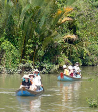

Tailor Made Tours for Canadian High School, College, and University
Students: March/April/May
There is no better time to visit the emerging country of Vietnam! Come during your spring break, in March or April, and take full advantage of our tailor made tours! Come and visit Vietnam, a unique country in many ways, in the heart of Asia. All tours are designed to meet specific educational needs of its students; just let us know what is your educational focus, the dates, length of stay, and we will prepare a comprehensive program while traveling in Vietnam. Tours include: Community Service, Cultural Exchanges, Home stays, travel to North Vietnam, Central Vietnam, and South Vietnam. This is designed for people who wish to travel to Vietnam and to engage fully in a community service, cultural or business project. Vietnam has something to offer for everyone.
Pics
Sample Tour 1:
A 14 day tour of Hanoi, Ha Long Bay, Mai Chau, Ho Chi Minh City and environs, with twin share, 3 star accommodations and all meals for about $1,000 CDN dollars for a group of 30 (exact quote will be available upon booking date). Tours include five days of visiting the natural beauty of northern Vietnam in the Hanoi and Halong area, with a homestay in Mai Chau to experience village life of the White Thai minority peoples. Comprises five days in Ho Chi Minh City vicinity, which lies in the middle of the prosperous southern region, regarded as the economic nucleus of Vietnam. Includes the Mekong Delta, Cu Chi tunnels, and a few fabulous days of relaxation at the beach resort of Mui Ne on the China Sea.
Sample Tour 2:
One of the community service tour possibilities comprises seven days of service, and eight days of cultural tourism. The community service focus of this tour is to build a pre-school facility in a local village of Northern Vietnam. Homestay accommodation will be provided in a traditional home on stilts. Service activities in this tour include partaking in the last phases of the construction of the school, such as painting, furnishing the classrooms and building storage cubbies. Other travel destinations for the rest of the trip can include visiting the Sapa region, trekking in Ta Phien, and journeying to Halong Bay or Hue.
If you are interested in either of these tours or in designing your own and would like more information, fill out an application and we will provide you with a proposed itinerary for your travels. |
 |